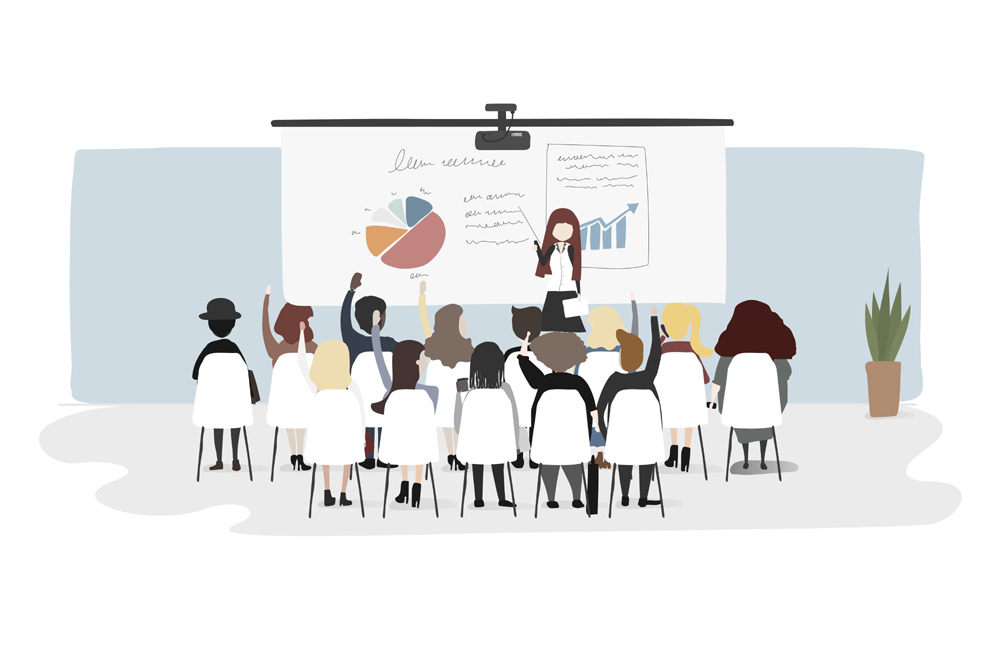

Jan 15, 2018

A motivational speech is a piece of advice or information from one’s own experience and the lessons learned in life. These talks are usually delivered to the audience with a purpose of encouraging and motivating them to achieve the things that they want to in their lives and to go after their dreams.
More often people, especially the school and college students are under tremendous pressure to excel and be better at the things that they do. This pressure if not managed and handled in an appropriate way can prove to be damaging to one’s life. Are you wondering about how those situations can be handled? We might just have a solution for it.
We at ASKMETRIP don’t want you to go through the confusion about how to handle things. We help organize trips that focus on providing educational knowledge to the students. One of the trips from our packages is the Guest cum Expert Trip. These trips include a motivational talk session from a guest expert who is usually a Motivational speaker, Writer, Artist, etc. These experts come forward to share their own life experiences and knowledge with the students to help them deal with certain situations. The students do get some exposure and the answers to their unasked questions can be solved. Some of the topics of the motivational talk includes Social Awareness, Public Relations, Positive Thinking, Team Building, Gaining Confidence, etc.
These talks can really be beneficial to the students in the following ways,
1. Inspire and drive them forward to achieve their goals.
2. Foster Morale.
3. Impart Knowledge and Skills.
4. Help to inculcate Self-Discipline.
5. Provide new perspectives.
6. Help to develop self-belief.
It is important for students to know and understand the right way of handling the pressure that the society puts on them. We at ASKMETRIP aim to provide a way for students to find their own way of achieving their goals and changing their dreams into reality.
The Guest cum Expert Trip is not only a way to provide them with some knowledge but also a fun way to take a break and gain some new perspective.
written by :